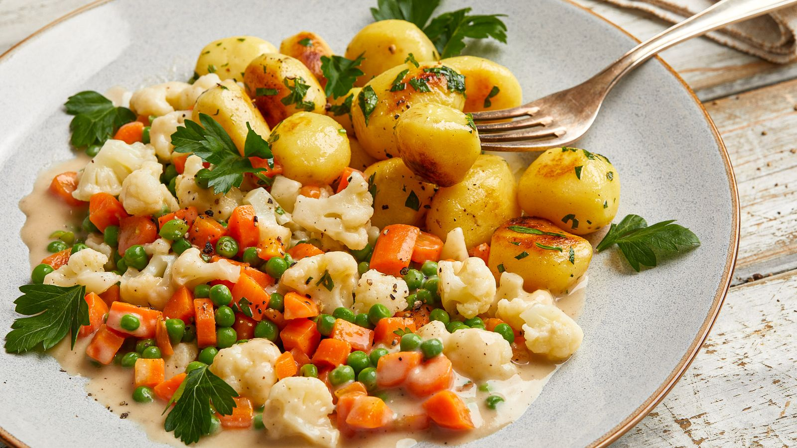

As the name suggests, this German specialty hails from Leipzig, and it is typically based on a mix of vegetables. The dish usually consists of a combination of young vegetables, crayfish tails, morel mushrooms, and bread dumplings which are doused in a creamy, buttery sauce.
Meal prep time : 35 minutes
Servings : 6